Round 1 — mining: the digging and the cleanup
1
open pit timelapse
mining equity analyst
Input
Show me how the Bingham Canyon pit outside Salt Lake City has changed over the last 8 years, one picture a year.
Our read
Here is the pit as eight Sentinel-2 true-colour pictures, one per year from 2018 to 2025, in a play-through map.
Learning → The tile a year comes from keeps changing, and one of them barely covers the pit.
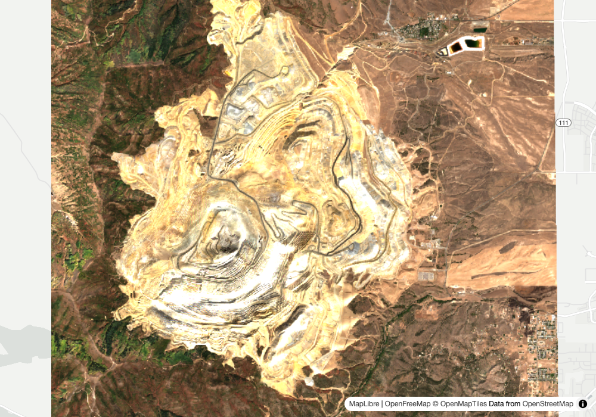
timelapse: Bingham pit, 2018 to 2025 ↗full read
Our read
Here is the pit as eight Sentinel-2 true-colour pictures, one per year from 2018 to 2025, in a play-through map. Every frame is a clear early-to-late-September scene (0.00% cloud in the search results, dates 2018-09-25 through 2025-09-25) that covers the whole box. The tool draws the pictures; it does not measure the pit, so I am not putting a size or depth change on it. Step through the frames to judge how the benches and the dump area have moved.show the data
geocode("Bingham Canyon Mine, Utah")
source: nominatim name: Bingham Canyon Mine, Salt Lake County, Utah, United States
lat: 40.5311559 lon: -112.1297499
bbox: [-112.1775332, 40.4910342, -112.0930338, 40.5722075] [used as the frame, rounded to [-112.17, 40.49, -112.09, 40.57]]
search_imagery("earth-search", ["sentinel-2-l2a"], bbox=pit, datetime_range="-08-15/-09-30", max_cloud_cover=10, limit=20), one search per year 2018 to 2025; kept items with covers_aoi_pct >= 99, lowest cloud first
2018: S2B_12TUK_20180925_1_L2A 2018-09-25 cloud 0.00% covers_aoi_pct 100.0
2019: S2A_12TVK_20190918_1_L2A 2019-09-18 cloud 0.00% covers_aoi_pct 100.0
2020: S2B_12TUK_20200924_1_L2A 2020-09-24 cloud 0.00% covers_aoi_pct 100.0
2021: S2A_12TUK_20210924_1_L2A 2021-09-24 cloud 0.00% covers_aoi_pct 100.0
2022: S2A_12TUK_20220909_0_L2A 2022-09-09 cloud 0.00% covers_aoi_pct 100.0
2023: S2A_12TVK_20230924_0_L2A 2023-09-24 cloud 0.00% covers_aoi_pct 100.0
2024: S2B_12TVK_20240906_0_L2A 2024-09-06 cloud 0.00% covers_aoi_pct 100.0
2025: S2A_12TVK_20250925_0_L2A 2025-09-25 cloud 0.00% covers_aoi_pct 100.0
render_timelapse(title="Bingham Canyon pit, 2018-2025", bbox=pit, frames=<8 layers, assets=["visual"]>, subtitle="Sentinel-2 true colour, one late-summer frame a year", out_path="docs/img/ft13-mine-bingham.html")
map_path: docs/img/ft13-mine-bingham.html
frames: 8
state.layers: 2018-09-25, 2019-09-18, 2020-09-24, 2021-09-24, 2022-09-09, 2023-09-24, 2024-09-06, 2025-09-25 [tile URLs omitted]
Learning → The tile a year comes from keeps changing, and one of them barely covers the pit. The pit sits near a Sentinel-2 tile edge, so the years alternate between tile 12TUK and 12TVK, and my first 2018 search returned a 12TVL scene reading
covers_aoi_pct: 16.6 at 3.8% cloud. Filtering on covers_aoi_pct before cloud gave eight frames that all cover the box; sorting on cloud alone would have put a 17% sliver in the 2018 slot.render_timelapse (8 frames, tiles load per frame) · search_imagery covers_aoi_pct · Stack panel on by default
2
lithium ponds
battery supply-chain journalist
Input
I need a striking image of the lithium evaporation ponds on the Salar de Atacama for a story, with a date on it.
Our read
The postcard is ready: a Sentinel-2 false-colour image of the evaporation ponds on the Salar de Atacama, dated 2026-10-09.
Learning → The geocoder's box is the salar, not the ponds.
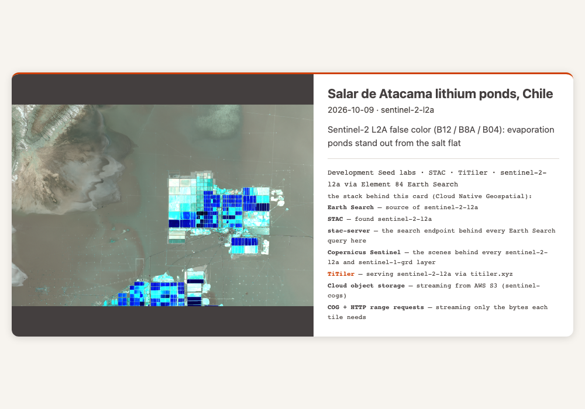
postcard: Atacama ponds, SWIR false colour, 2026-10-09 ↗full read
Our read
The postcard is ready: a Sentinel-2 false-colour image of the evaporation ponds on the Salar de Atacama, dated 2026-10-09. I used the SWIR B12 / B8A / B04 mix (assets swir22, nir08, red), which turns the brine ponds blue to cyan against a grey-brown salt flat. The scene is S2C_19KEQ_20261009_0_L2A at 2.02% cloud, covering 100% of the box. A clearer scene (0.35% cloud) exists for 2026-09-19; I took the newer one because both are clear. The caption names the band mix so a reader knows the colours are not natural.show the data
geocode("Salar de Atacama, Chile")
source: nominatim name: Salar de Atacama, Región de Antofagasta, Chile ambiguous: false
lat: -23.3836226 lon: -68.2566721
bbox: [-68.5733987, -23.7862871, -68.0643599, -22.9823745] [whole salar; not used]
geocode_note: matched 'Salar de Atacama, Chile'; other places share it: Salar de Atacama, Región de Valparaíso, Chile / [...]
[pond box chosen by hand: [-68.50, -23.54, -68.28, -23.40]; my first guess, [-68.36, -23.56, -68.22, -23.44], cut the ponds off at the left edge]
search_imagery("earth-search", ["sentinel-2-l2a"], bbox=ponds, datetime_range="2026-08-15/2026-10-26", max_cloud_cover=5, limit=8) [first guess box]
S2C_19KEQ_20261009_0_L2A 2026-10-09 cloud 2.021606 covers_aoi_pct 100.0
S2C_19KEQ_20260919_0_L2A 2026-09-19 cloud 0.35325 covers_aoi_pct 100.0 [other rows omitted]
recommended: S2C_19KEQ_20261009_0_L2A, "2.0% cloud, covers 100.0% of the area, and newest of 5 near-equal scenes; the clearest (0.4% cloud) is from 2026-09-19"
render_postcard("earth-search", "sentinel-2-l2a", "S2C_19KEQ_20261009_0_L2A", place="Salar de Atacama lithium ponds, Chile", date="2026-10-09", bbox=ponds, assets=["swir22","nir08","red"], rescale="0,5000", caption="Sentinel-2 L2A false color (B12 / B8A / B04): evaporation ponds stand out from the salt flat")
{"path": "docs/img/ft13-mine-lithium.html"}
Learning → The geocoder's box is the salar, not the ponds. The returned bbox spans about 0.5 by 0.8 degrees and the ponds fill one corner of it, so I picked a box by hand; my first guess still cut the pond fields at the left edge, and I only saw it by decoding the card's embedded PNG. Widening west to -68.50 put the whole pond block in frame. The postcard tool has no preview step, so framing is the one thing you can only check after the fact.
render_postcard (SWIR false colour, bbox frame, caption, date) · search_imagery recommended · Stack credit block
3
tailings revegetation
environmental compliance officer
Input
At Brumadinho in Brazil, how much of the ground the 2019 tailings flow covered has greened back by now?
Our read
The valley box is greener now than before the dam failed: mean NDVI is 0.6328 on 2025-07-01 against 0.5591 on 2018-08-15, a rise of 0.0737 (13.2%, both from the tool).
Learning → The ask's baseline answers a different question.
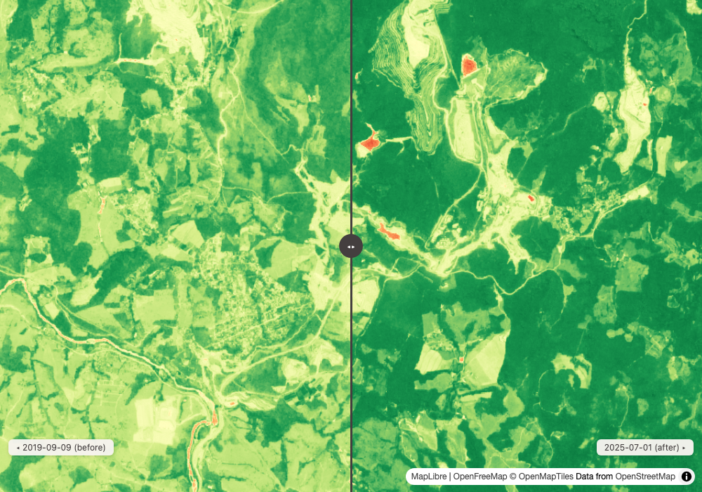
swipe: Brumadinho NDVI, 2019 vs 2025 ↗full read
Our read
The valley box is greener now than before the dam failed: mean NDVI is 0.6328 on 2025-07-01 against 0.5591 on 2018-08-15, a rise of 0.0737 (13.2%, both from the tool). Measured from the first dry season after the flow, 2019-09-09, it was 0.4851, so the rise since then is 0.1477 (30.4%, tool). By my arithmetic (not tool output) the post-flow drop was 0.5591 - 0.4851 = 0.0740, and the gain since is about twice that. That is NOT the share of the mud footprint that has greened: the number is one mean over a 6.5 km box that also holds forest, pit and roads, and I did not outline the flow, so I cannot give a percentage of the covered ground.show the data
geocode("Brumadinho, Brazil")
source: nominatim name: Brumadinho, Minas Gerais, Região Sudeste, Brasil
lat: -20.143611 lon: -44.2
bbox: [-44.35, -20.318, -43.965, -20.0542549] [whole municipality; not used]
[box chosen by hand around the Corrego do Feijao mine and the valley below it: [-44.17, -20.17, -44.11, -20.11], about 6.5 km a side]
compare_dates(bbox=mud, window_before="2018-07-01/2018-09-30", window_after="2025-07-01/2025-09-30", max_cloud_cover=10, label="Brumadinho mud path NDVI")
{"tile": "23KNT", "after": {"id": "S2A_23KNT_20250701_1_L2A", "date": "2025-07-01", "cloud": 0.014011, "mean": 0.6328}, "before": {"id": "S2A_23KNT_20180815_1_L2A", "date": "2018-08-15", "cloud": 0.001593, "mean": 0.5591}, "delta": 0.0737, "delta_pct": 13.2, "expression": "(nir-red)/(nir+red)", "clipped_to": [-44.17, -20.17, -44.11, -20.11]}
compare_dates(bbox=mud, window_before="2019-07-01/2019-09-30", window_after="2025-07-01/2025-09-30", max_cloud_cover=10, label="Brumadinho mud path NDVI 2019 vs 2025")
{"tile": "23KNT", "after": {"id": "S2A_23KNT_20250701_1_L2A", "date": "2025-07-01", "cloud": 0.014011, "mean": 0.6328}, "before": {"id": "S2A_23KNT_20190909_1_L2A", "date": "2019-09-09", "cloud": 0.000956, "mean": 0.4851}, "delta": 0.1477, "delta_pct": 30.4, "expression": "(nir-red)/(nir+red)", "clipped_to": [-44.17, -20.17, -44.11, -20.11]}
Learning → The ask's baseline answers a different question. A 2018 "before" is pre-failure, so the delta says the box is now above its old level, not how much of the flow area has recovered; I reran with 2019 as the post-flow start, and the swipe artifact is that second run. Neither run says what share of the mud footprint is green, because compare_dates returns one clipped mean for the box and has no polygon mask, so the user's "how much of the ground" needs a footprint outline the tool does not take.
compare_dates (clipped means, hand bbox, two baselines) · swipe artifact · Stack panel
4
reclamation check
West Virginia state reclamation inspector
Input
Hobet mine in Boone County was supposed to be reclaimed. Is vegetation actually coming back on the old mountaintop removal area since 2016?
Our read
Probably yes, but the evidence is thin: NDVI over a hand-drawn box on the bare benches rose from 0.7432 (2017-07-26) to 0.8371 (2025-08-10), a gain of 0.0939 (12.6%, from the tool).
Learning → There is no place yet for a caller's own notes beside a map.
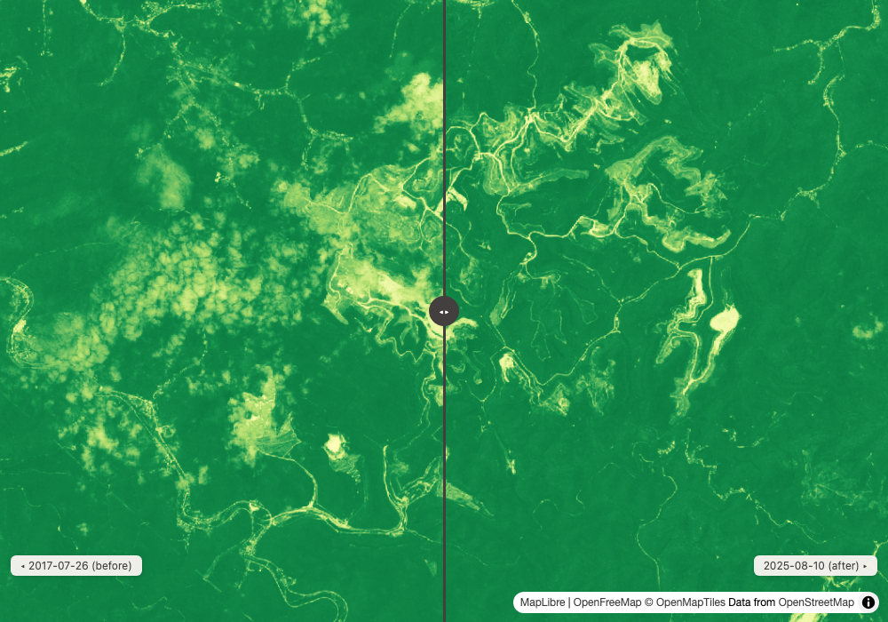
swipe: Hobet-area NDVI, 2017 vs 2025 ↗full read
Our read
Probably yes, but the evidence is thin: NDVI over a hand-drawn box on the bare benches rose from 0.7432 (2017-07-26) to 0.8371 (2025-08-10), a gain of 0.0939 (12.6%, from the tool). I could not start at 2016 because the Sentinel-2 L2A catalog returned nothing for 2016 over this area, so the earlier date is 2017. I also could not locate Hobet by name; the box is my own pick from a true-colour preview, not a permit boundary, and I have no permit acreage to set against it. The 2017 scene is partly cloudy in the preview I looked at, which may pull its mean down.show the data
geocode("Hobet mine, Boone County, West Virginia")
{"error": "No geocoding result for 'Hobet mine, Boone County, West Virginia'"}
geocode("Hobet Mine")
{"error": "No geocoding result for 'Hobet Mine'"}
geocode("Hobet, Boone County, West Virginia")
{"error": "No geocoding result for 'Hobet, Boone County, West Virginia'"}
geocode("Madison, Boone County, West Virginia")
name: Madison, Boone County, West Virginia, 25130, United States lat: 38.0670454 lon: -81.8192892
bbox: [-81.83798, 38.039986, -81.749063, 38.083867] kind: town
compare_dates(bbox=[-81.88, 37.97, -81.76, 38.07], window_before="2016-06-01/2016-09-30", window_after="2025-06-01/2025-09-30", max_cloud_cover=10) [first guess box]
{"error": "Not enough scenes: 7 after, 0 before. Widen windows or cloud limit."}
search_imagery("earth-search", ["sentinel-2-l2a"], bbox=[-81.88, 37.97, -81.76, 38.07], datetime_range="2016-01-01/2016-12-31", max_cloud_cover=40)
[]
compare_dates(bbox=[-81.88, 37.97, -81.76, 38.07], window_before="2017-07-01/2017-09-30", window_after="2025-06-01/2025-09-30", max_cloud_cover=10) [first guess box, 2017]
{"tile": "17SMC", "after": {"id": "S2A_17SMC_20250810_0_L2A", "date": "2025-08-10", "cloud": 0.050982, "mean": 0.8546}, "before": {"id": "S2B_17SMC_20170726_0_L2A", "date": "2017-07-26", "cloud": 5.707466, "mean": 0.8386}, "delta": 0.016, "delta_pct": 1.9, ...}
compare_dates(bbox=[-81.78, 38.0, -81.66, 38.1], window_before="2017-07-01/2017-09-30", window_after="2025-06-01/2025-09-30", max_cloud_cover=10, label="Hobet NDVI 2017 vs 2025", stack_facts={"aoi": "hand-picked from a true-colour preview where bare benches show", "before scene": "2017 summer (no 2016 scene exists)", "after scene": "2025 summer"})
{"tile": "17SMC", "after": {"id": "S2A_17SMC_20250810_0_L2A", "date": "2025-08-10", "cloud": 0.050982, "mean": 0.8371}, "before": {"id": "S2B_17SMC_20170726_0_L2A", "date": "2017-07-26", "cloud": 5.707466, "mean": 0.7432}, "delta": 0.0939, "delta_pct": 12.6, "expression": "(nir-red)/(nir+red)", "clipped_to": [-81.78, 38.0, -81.66, 38.1]}
Learning → There is no place yet for a caller's own notes beside a map. I passed three free-text facts in
stack_facts and none of them show in the Stack panel. That is by design: stack_facts are honest provenance flags (geocoded, events, weather, passes, terrain, snapshot) that tell the panel which components to credit, not a notes field, so an inspector's "box hand-picked, no 2016 scene" has nowhere to go but the subtitle or the answer. Two smaller stumbles: the geocoder found nothing for Hobet in three phrasings, and there is no 2016 scene to compare against, so "since 2016" became 2017.compare_dates stack_facts (provenance flags, not notes) · clipped means · geocode refusal and hand bbox · Stack panel
5
superfund pit 3d
Superfund community liaison, Butte
Input
Give me a 3D view of the Berkeley Pit so residents can see how the pit lake sits relative to town.
Our read
The 3D view is ready: a Sentinel-2 true-colour scene from 2026-10-09 draped over terrain at 2x vertical stretch, framed on the Berkeley Pit with the town of Butte to its west.
Learning → The geocoder had the pit's real box and still handed back a 0.3 degree one.
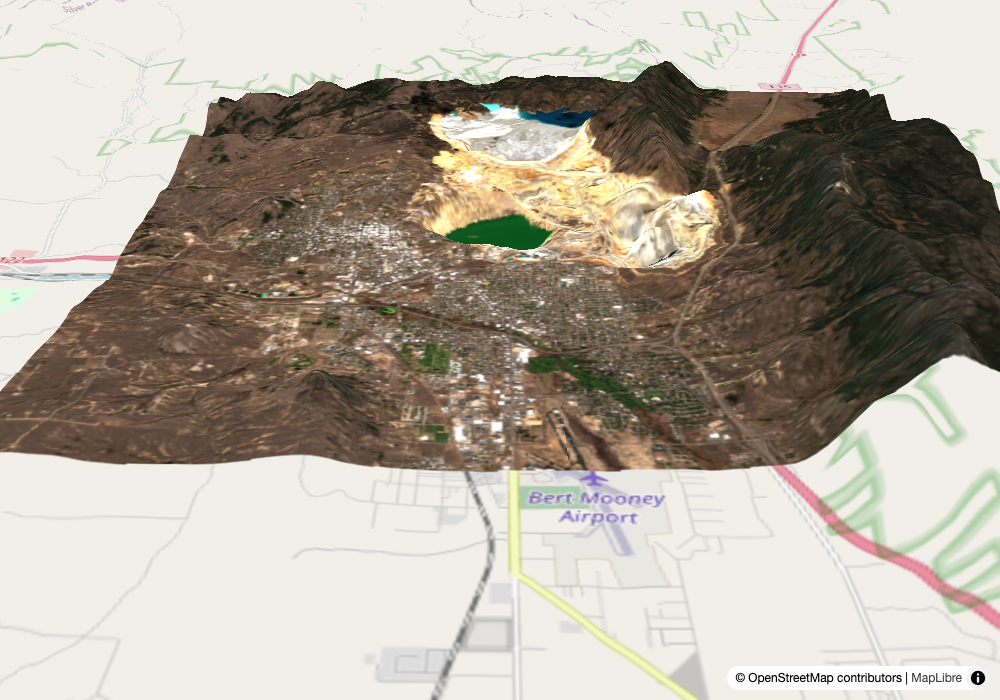
3D map: Berkeley Pit and Butte, 2026-10-09 ↗full read
Our read
The 3D view is ready: a Sentinel-2 true-colour scene from 2026-10-09 draped over terrain at 2x vertical stretch, framed on the Berkeley Pit with the town of Butte to its west. The scene (S2B_12TUS_20261009_0_L2A) has 1.8% cloud and the tool reports coverage_pct 100.0 for my box, so there is no gap to fill. The subtitle names the date. The tool draws what the satellite saw on that day; it does not give the pit lake's level, depth or water quality, so the view shows position, not the lake's condition. I did not open the 3D view in a browser, so how the 2x stretch reads is unchecked.show the data
geocode("Berkeley Pit lake, Butte, Montana")
source: nominatim name: Berkeley Pit, Butte, Silver Bow County, Montana, United States
lat: 46.0171513 lon: -112.511732
bbox: [-112.661732, 45.8671513, -112.36173199999999, 46.1671513] [point widened to 0.3 deg; not used]
candidates: [{"name": "Berkeley Pit, Butte, Silver Bow County, Montana, United States", "bbox": [-112.5235427, 46.0107713, -112.4990514, 46.0234592], "source": "nominatim", "where": "Berkeley Pit, Montana, United States", "kind": "water"}]
geocode_note: matched 'Berkeley Pit Butte Montana' after simplifying 'Berkeley Pit lake, Butte, Montana'.
bbox_note: geocoder returned a point, not an extent — widened to a 0.3 deg box around it.
[view box chosen by hand to take in the pit and the town to its west: [-112.58, 45.97, -112.44, 46.06]]
search_imagery("earth-search", ["sentinel-2-l2a"], bbox=view, datetime_range="2026-08-15/2026-10-26", max_cloud_cover=5, limit=8)
S2C_12TUS_20261021_0_L2A 2026-10-21 cloud 4.704387 covers_aoi_pct 100.0
S2A_12TUR_20261016_0_L2A 2026-10-16 cloud 0.087828 covers_aoi_pct 86.2 [other rows omitted]
S2B_12TUS_20261009_0_L2A 2026-10-09 cloud 1.796988 covers_aoi_pct 100.0
render_map_3d("Berkeley Pit and Butte, 3D", bbox=view, layer=, exaggeration=2.0, subtitle="Sentinel-2 true colour, 2026-10-09, terrain x2.0", stack_facts={"scene": "S2B_12TUS_20261009_0_L2A", "cloud cover %": "1.8"})
path: docs/img/ft13-mine-berkeley3d.html title: Berkeley Pit and Butte, 3D
state: {"bbox": [-112.58, 45.97, -112.44, 46.06], "exaggeration": 2.0, "terrain": true, ..., "coverage_pct": 100.0}
Learning → The geocoder had the pit's real box and still handed back a 0.3 degree one. The one candidate carries a tight bbox about 0.024 by 0.013 degrees (kind
water), but the top-level bbox is the 0.3 degree box the point rule makes, because the pit is under 0.02 degrees tall and the rule treats that as a point. The word "lake" did nothing here: its kinds are lake and reservoir, the pit is tagged water, and there was only one candidate anyway. For a 3D view that matters, since too wide a box makes the pit a speck, so I framed it by hand. Coverage was not short; the one scene that was (12TUR, 86.2%) lost to 12TUS at 100%.render_map_3d (terrain, exaggeration, subtitle) · geocode candidate kind (0.28.0) · point-widening rule on a small real extent · Stack panel names Terrarium terrain
Round 2 — water, reservoirs and a canyon
6
reservoir level
water district manager
Input
How does Shasta Lake, California look right now compared with the same month 2 years ago? Is the shoreline up or down?
Our read
The water index over the reservoir box is a little higher now than in October 2024, so the lake looks slightly wetter, but this call cannot say the shoreline is up or down.
Learning → A town and a lake share the name, and 0.28.0 now tells them apart.
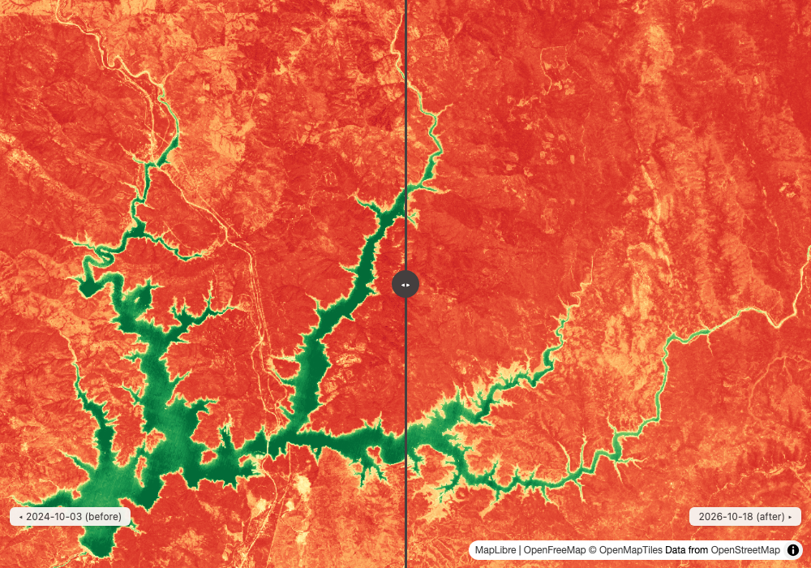
swipe: Shasta Lake, 3 Oct 2024 vs 18 Oct 2026 ↗full read
Our read
The water index over the reservoir box is a little higher now than in October 2024, so the lake looks slightly wetter, but this call cannot say the shoreline is up or down. The mean green-over-NIR water index was -0.5508 on 2026-10-18 against -0.5809 on 2024-10-03, a change of +0.0301 (5.2%). Both scenes are nearly cloud-free. The mean is taken over the whole reservoir box, land included, so it blends lake surface with dry shore and a 0.03 shift is a small move, not a measured waterline. The swipe shows the two dates side by side so a manager can judge the shoreline by eye.show the data
geocode("Shasta Lake, California")
source: nominatim name: Shasta Lake, Shasta County, California, United States
bbox: [-122.4686401, 40.7143553, -122.0151549, 40.947135] ambiguous: false
candidates:
1. Shasta Lake, Shasta County, California, United States kind: reservoir bbox: [-122.4686401, 40.7143553, -122.0151549, 40.947135]
2. Shasta Lake, Shasta County, California, United States kind: town bbox: [-122.411328, 40.650921, -122.336985, 40.709755]
[the word "Lake" picked candidate 1, the reservoir; the town of the same name was the other]
compare_dates(bbox=, expression="(green-nir)/(green+nir)", window_before="2024-09-25T00:00:00Z/2024-10-25T23:59:59Z", window_after="2026-09-25T00:00:00Z/2026-10-25T23:59:59Z", stack_facts={"geocoded": "nominatim"})
tile: 10TEL
after: S2B_10TEL_20261018_0_L2A 2026-10-18 cloud 0.000182 mean -0.5508
before: S2A_10TEL_20241003_0_L2A 2024-10-03 cloud 0.000242 mean -0.5809
delta: 0.0301 delta_pct: 5.2
clipped_to: [-122.4686401, 40.7143553, -122.0151549, 40.947135]
map_path: /tmp/ft13r2/out/map-shasta-lake-water-index---2026-10-18-vs-2024-10-03.html
Learning → A town and a lake share the name, and 0.28.0 now tells them apart. Nominatim returned two "Shasta Lake" candidates, and the geocode kind field marked one reservoir and one town; the word lake picked the reservoir, so the clip box covers the water and not the town to its south. The limit is the number:
compare_dates gives one mean per date for the whole box, which is not a shoreline length or a water area.geocode kind and feature-word pick (0.28.0) · compare_dates NDWI-style expression, clipped means (0.21.0) · swipe map · Stack panel with geocoded fact
7
powell bathtub ring
river journalist
Input
Lake Powell: show me the low point of 2022 against this year, side by side, and tell me how much more water surface there is now.
Our read
In the box around Wahweap and the main channel, about 5.0% of the pixels read as water on 2026-05-11 against 3.6% on 2022-05-02, so there is more water surface now, roughly 1.4 times as…
Learning → "Lake Powell" geocodes to Australia first.
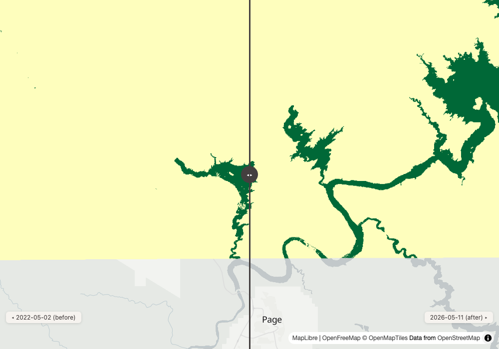
swipe: Lake Powell water mask, 2 May 2022 vs 11 May 2026 ↗full read
Our read
In the box around Wahweap and the main channel, about 5.0% of the pixels read as water on 2026-05-11 against 3.6% on 2022-05-02, so there is more water surface now, roughly 1.4 times as much by pixel share. The shares are the means of a 1 where the water index is above zero, 0 elsewhere, returned as 0.0501 and 0.0363, a difference of 0.0138. The tool's own 38.0% is the same ratio; I got 1.38 times from 0.0501 / 0.0363 (my arithmetic, not tool output). The box is about 22 km by 24 km, roughly 540 km2, so 0.0138 of it is about 7.5 km2 of extra water (my arithmetic from the box size, not tool output). The tool warns that a baseline this small makes the percentage swing on noise, so quote the 0.0138, not the 38%. The index threshold of zero is my choice, and steep canyon shadow can also read as water, so treat this as a good estimate, not a surveyed area.show the data
geocode("Lake Powell")
source: gazet name: Lake Powell (AU, locality) bbox: [142.8666229248047, -34.7808723449707, 143.0175323486328, -34.647972106933594]
geocode_note: 2 places match 'Lake Powell' equally well; using Lake Powell (AU, locality) at 34.7S 142.9E, not Powell (reservoir) at 37.4N 111.0W. Pass the fuller name if another was meant. ambiguous: pass the fuller name or a bbox
candidates: Lake Powell (AU, locality) kind: locality | Powell (reservoir) kind: reservoir, bbox [-111.55546361133912, 36.932214624519844, -110.36299453232873, 37.913330260249694]
geocode("Lake Powell, Utah")
source: nominatim name: Lake Powell, San Juan County, Utah, United States candidates: [Lake Powell, San Juan County, Utah ... kind: reservoir]
[reservoir box is 1.2 x 1.0 deg; chosen by hand instead: Wahweap and the main channel up to the Navajo Mountain side, [-111.60, 36.90, -111.35, 37.12]]
compare_dates(bbox=[-111.60, 36.90, -111.35, 37.12], expression="(green-nir)/(green+nir)", window_before="2022-04-01T00:00:00Z/2022-05-15T23:59:59Z", window_after="2026-04-01T00:00:00Z/2026-05-15T23:59:59Z")
tile: 12SVG after: S2C_12SVG_20260511_0_L2A (cloud 0.143032) mean -0.2221 before: S2A_12SVG_20220502_0_L2A (cloud 0.097644) mean -0.2311
delta: 0.009 delta_pct: 3.9
compare_dates(same bbox and windows, expression="where((green-nir)/(green+nir)>0,1,0)", label="Lake Powell water fraction")
after: S2C_12SVG_20260511_0_L2A 2026-05-11 cloud 0.143032 mean 0.0501
before: S2A_12SVG_20220502_0_L2A 2022-05-02 cloud 0.097644 mean 0.0363
delta: 0.0138 delta_pct: 38.0
caveat: ["delta_pct is unstable: the baseline mean (0.0363) is near zero, so a small absolute change reads as a large percentage. Trust delta over delta_pct."]
map_path: /tmp/ft13r2/out/map-lake-powell-water-fraction---2026-05-11-vs-2022-05-02.html
Learning → "Lake Powell" geocodes to Australia first. Gazet ranks an Australian locality equal to the reservoir and picks it, flagging
ambiguous: true. Adding a state ("Lake Powell, Utah") resolved the reservoir, but its box is far bigger than the Wahweap ask. A second stumble: a plain NDWI mean barely moved (-0.2311 to -0.2221) because land dominates the box, and a thresholded 0/1 expression passed to compare_dates is what turned it into a water share.geocode ambiguity and kind (0.28.0) · compare_dates thresholded expression, clipped means (0.21.0) · swipe map · Stack panel
8
salt lake shrinking
Utah public health researcher
Input
I keep hearing the Great Salt Lake is drying up and exposing toxic dust. Show the lake 2011 against now.
Our read
In the 2011 and 2026 Landsat true-colour scenes the lake looks smaller and the pale exposed lakebed looks broader in 2026.
Learning → Route taken: two search_imagery calls and a render_map swipe, because compare_dates is Sentinel-2 only.
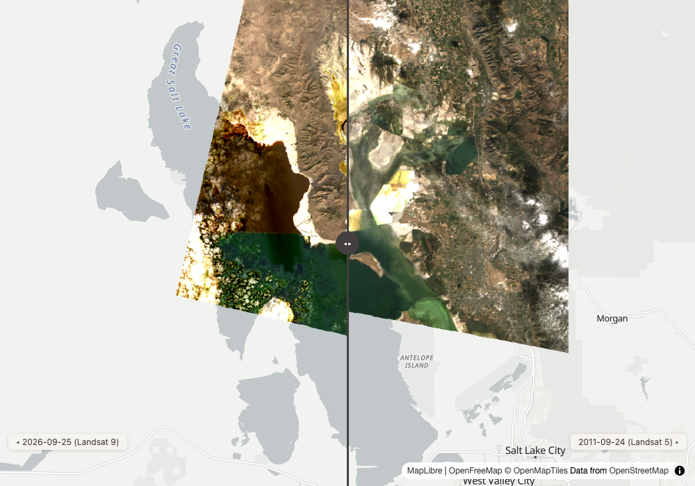
swipe: Great Salt Lake, Landsat 24 Sep 2011 vs 25 Sep 2026 ↗full read
Our read
In the 2011 and 2026 Landsat true-colour scenes the lake looks smaller and the pale exposed lakebed looks broader in 2026. I opened one z8 tile of each scene (the south-east part of the lake near Antelope Island and the Salt Lake valley) and the 2026 view shows a wider pale and yellow band along the shore and less open water at the lower left than 2011 does. That is my reading of a small image, not a measurement: no area, shoreline length or dust figure came from a tool, and imagery cannot show whether dust is toxic. The scenes are 24 September 2011 (Landsat 5, 3.0% cloud) and 25 September 2026 (Landsat 9, 2.16% cloud), both path 038 row 031.show the data
geocode("Great Salt Lake")
source: gazet name: Great Salt (alkaline lake) bbox: [-113.02537088017112, 40.687123430211415, -111.93092505549556, 41.68148545166218]
candidates: [Great Salt (alkaline lake) kind: alkaline lake]
compare_dates(bbox=[-112.9, 40.7, -111.9, 41.7], window_before="2011-09-01T00:00:00Z/2011-09-30T23:59:59Z", window_after="2026-09-20T00:00:00Z/2026-10-25T23:59:59Z")
{"error": "Not enough scenes: 25 after, 0 before. Widen windows or cloud limit."}
search_imagery("planetary-computer", ["landsat-c2-l2"], bbox=[-112.9, 40.7, -111.9, 41.7], datetime_range="2011-08-01/2011-09-30", max_cloud_cover=20)
LT05_L2SP_038031_20110924_02_T1 2011-09-24 cloud 3.0 covers_aoi_pct 93.3
LT05_L2SP_038031_20110908_02_T1 2011-09-08 cloud 0.0 covers_aoi_pct 93.6
[...]
recommended: LT05_L2SP_038031_20110924_02_T1 ("3.0% cloud, covers 93.3% of the area, and newest of 4 near-equal scenes")
search_imagery(same bbox, datetime_range="2026-09-01/2026-10-25", max_cloud_cover=20)
LC09_L2SP_038031_20260925_02_T1 2026-09-25 cloud 2.16 covers_aoi_pct 100.0
[...]
recommended: LC09_L2SP_038031_20260925_02_T1 ("2.2% cloud, covers 100.0% of the area")
render_map("Great Salt Lake 2011 vs 2026", bbox=[-112.9, 40.7, -111.9, 41.7], layers=[LT05 ... assets red,green,blue rescale 7000,17000 ; LC09 ... same], compare=True, stack_facts={"geocoded": "gazet"})
map_path: /Users/Danny/Source/groundstation-ft13/docs/img/ft13-water-saltlake.html
layers: ["2011-09-24 (Landsat 5)", "2026-09-25 (Landsat 9)"] coverage_pct: 100.0
Learning → Route taken: two search_imagery calls and a render_map swipe, because compare_dates is Sentinel-2 only. Asked for a 2011 window it refused with "Not enough scenes: 25 after, 0 before", since Sentinel-2 starts in 2015. Landsat collection 2 level 2 on Planetary Computer has 2011 (Landsat 5), and matching path 038 row 031 for both years gave same-footprint scenes; with no index means, the answer is visual only.
geocode kind, alkaline lake (0.28.0) · compare_dates refusal · search_imagery recommended and covers_aoi_pct · Landsat render_map compare swipe · Stack panel with geocoded fact
9
flood aftermath
European news desk editor
Input
Valencia, Spain had the terrible flash flood in late October 2024. Show before and after over the Horta Sud towns south of the city.
Our read
Over the three towns, the NDVI mean fell from 0.2933 on 1 October 2024 to 0.1406 on 15 November 2024, a drop of 0.1527, but the November scene is cloudy, so treat the size of the drop with…
Learning → The same call returned two different answers.
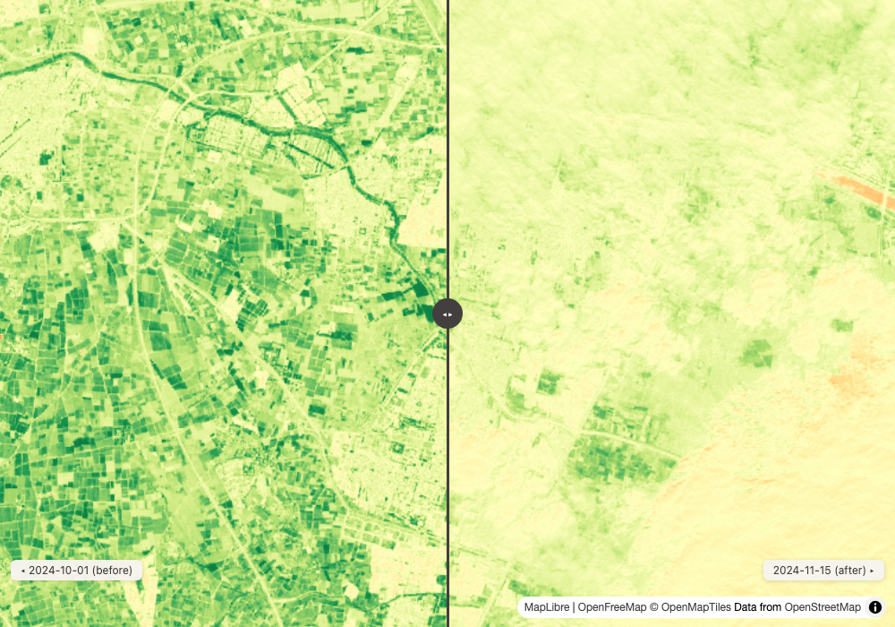
swipe: Horta Sud NDVI, 1 Oct 2024 vs 15 Nov 2024 ↗full read
Our read
Over the three towns, the NDVI mean fell from 0.2933 on 1 October 2024 to 0.1406 on 15 November 2024, a drop of 0.1527, but the November scene is cloudy, so treat the size of the drop with care. NDVI measures green vegetation, so a fall is consistent with mud, debris and stripped fields after the flood; it does not map the water or the damage. The tool warned that the November scene has 23% cloud (tile-wide, not over the towns) and cloud pulls the index toward zero. Widening to December, the only clear scene (15 December, 0.2% cloud) reads 0.3547, above October; that could be winter crops greening as much as recovery, so I would not call it recovered. A second identical call returned a different tile and a change of only +0.0043, so a single run here is not a result to publish alone.show the data
geocode("Paiporta, Spain") source: nominatim lat: 39.4279722 lon: -0.4184254 candidates: [Paiporta ... kind: town]
geocode("Catarroja, Spain") source: nominatim lat: 39.4033747 lon: -0.4028759 candidates: [Catarroja ... kind: town]
[each geocodes to one town; Alfafar sits between them. Box chosen by hand over the three: [-0.46, 39.38, -0.35, 39.45]]
compare_dates(bbox=[-0.46, 39.38, -0.35, 39.45], window_before="2024-10-01/2024-10-20", window_after="2024-11-05/2024-11-25") [run 1]
tile: 31SBD
after: S2A_31SBD_20241115_0_L2A 2024-11-15 cloud 22.916301 mean 0.1406
before: S2B_31SBD_20241001_0_L2A 2024-10-01 cloud 9.90776 mean 0.2933
delta: -0.1527 delta_pct: -52.1
caveat: ["cloud may be driving this delta (after scene 23%, threshold 20%). Cloud pushes a normalized index toward zero."]
map_path: /tmp/ft13r2/out/map-horta-sud-flood-ndvi---2024-11-15-vs-2024-10-01.html
same call again [run 2]
tile: 30SYJ
after: S2B_30SYJ_20241110_0_L2A 2024-11-10 cloud 34.087646 mean 0.2984
before: S2B_30SYJ_20241001_0_L2A 2024-10-01 cloud 11.716232 mean 0.2941
delta: 0.0043 delta_pct: 1.5
caveat: ["cloud may be driving this delta (after scene 34%, threshold 20%). Cloud pushes a normalized index toward zero."]
same call with max_cloud_cover=12
{"error": "Not enough scenes: 0 after, 2 before. Widen windows or cloud limit."}
same, max_cloud_cover=12, window_after widened to 2024-11-05/2024-12-20
tile: 31SBD
after: S2A_31SBD_20241215_0_L2A 2024-12-15 cloud 0.217488 mean 0.3547
before: S2B_31SBD_20241001_0_L2A 2024-10-01 cloud 9.90776 mean 0.2933
delta: 0.0614 delta_pct: 20.9
Learning → The same call returned two different answers. With identical arguments, one run used Sentinel-2 tile 31SBD and the next used 30SYJ, which gave a delta of -0.1527 and +0.0043. The box lies close to the 0 degree meridian where the grid zone changes, which I suspect is why, but I did not confirm it. Cloud capped at 12% found no November scene, and the honest fix was widening to December, which shows December and not the aftermath.
compare_dates NDVI over a hand-picked bbox with clipped means (0.21.0) · cloud caveat · geocode kind town (0.28.0) · swipe map · Stack panel
10
canyon 3d
Grand Canyon river guide
Input
Give me a 3D view of the Grand Canyon around Phantom Ranch so I can show clients the drop from the rim.
Our read
The 3D view is built: Sentinel-2 true colour from 8 October 2026 (4.2% cloud) draped on terrain around Phantom Ranch at 2x vertical stretch, with the Stack panel on.
Learning → The cleanest scene is not the one that fits.
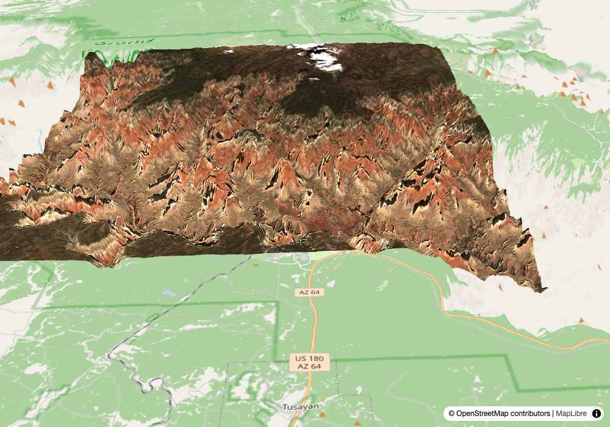
3D: Grand Canyon at Phantom Ranch, 8 Oct 2026 ↗full read
Our read
The 3D view is built: Sentinel-2 true colour from 8 October 2026 (4.2% cloud) draped on terrain around Phantom Ranch at 2x vertical stretch, with the Stack panel on. The box runs from the South Rim to the Colorado River and beyond, about 0.25 by 0.17 degrees. The search put the scene's coverage at 95.8%, while the 3D tool's own coverage_pct reads 100.0; if the search is right, a sliver at one edge is bare terrain. I set the 2x exaggeration so the rim-to-river drop reads without turning the canyon walls into spikes; I did not view the finished 3D page, only confirmed the tool wrote it with terrain on, so open it and check the stretch before showing clients.show the data
geocode("Phantom Ranch, Arizona")
source: nominatim name: Phantom Ranch, Coconino County, Arizona, United States lat: 36.1044228 lon: -112.095321
candidates: [Phantom Ranch, Coconino County, Arizona, United States kind: hamlet]
bbox_note: geocoder returned a point, not an extent -- widened to a 0.3 deg box around it. Pass your own bbox if the subject is bigger
[0.3 deg box is wider than needed; chosen by hand to run from the South Rim to the Colorado River and beyond: [-112.25, 36.03, -112.00, 36.20]]
search_imagery("planetary-computer", ["sentinel-2-l2a"], bbox=[-112.25, 36.03, -112.00, 36.20], datetime_range="2026-08-25/2026-10-25", max_cloud_cover=10)
S2B_MSIL2A_20261023T181419_R084_T12SUF_20261023T214959 2026-10-23 cloud 10.97 covers_aoi_pct 95.8
S2C_MSIL2A_20261008T181241_R084_T12SUF_20261008T212504 2026-10-08 cloud 4.22 covers_aoi_pct 95.8
[...]
recommended: S2C_MSIL2A_20261008T181241_R084_T12SUF_20261008T212504 ("4.2% cloud but covers 95.8% of the area; the clearest scene (0.1% cloud) covers 43.6%")
render_map_3d("Grand Canyon from Phantom Ranch", bbox=[-112.25, 36.03, -112.0, 36.2], layer=S2C_..._T12SUF (assets visual), exaggeration=2.0, subtitle="Sentinel-2 true colour, 8 Oct 2026, 2x vertical", stack_facts={"geocoded": "nominatim"})
path: /Users/Danny/Source/groundstation-ft13/docs/img/ft13-water-canyon3d.html
state: terrain: true, exaggeration: 2.0, coverage_pct: 100.0
Learning → The cleanest scene is not the one that fits. The 0.1%-cloud Sentinel-2 scene covers only 43.6% of the canyon box, so the recommended scene (4.2% cloud, 95.8% coverage) is the better 3D drape, and
recommended says why in one line. The geocode of a hamlet returned a point widened to 0.3 degrees; for a rim-to-river view the box needed choosing by hand.geocode kind hamlet (0.28.0) · search_imagery recommended and covers_aoi_pct · render_map_3d with exaggeration and subtitle · Stack panel (0.23.0)
Round 3 — heat, weather and honest refusals
11
store says no
vineyard manager
Input
Can you map the air temperature over my vineyards for last Tuesday (2026-10-20)? Walla Walla, Washington.
Our read
I cannot map the air temperature for 2026-10-20: neither temperature store that can be read holds that day.
Learning → One store refuses the old date; the other answers the wrong day and says so in a caveat.
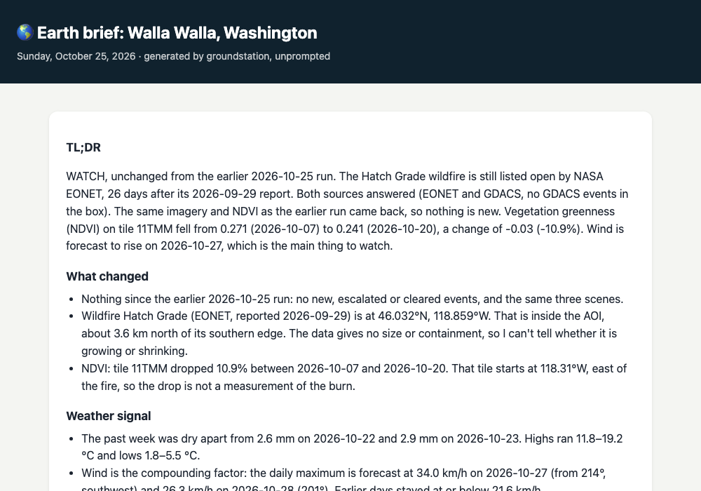
brief: Walla Walla, WATCH ↗full read
Our read
I cannot map the air temperature for 2026-10-20: neither temperature store that can be read holds that day. The one that can be drawn (ERA5) ends 2023-01-10, and the tool said so rather than drawing something. The forecast model (HRRR) can be read but keeps only the newest run, so it cannot reach back six days either. What I can give is the point answer: the weather service's grid cell at Walla Walla (elevation 288 m) shows a high of 17.4 C and a low of 4.4 C on 2026-10-20, with no rain. The brief page is the artifact because it is about now, and it reads WATCH: the Hatch Grade wildfire is still listed open, and wind is forecast at 34.0 km/h on 2026-10-27. A map of the vineyards would have been a 2023 picture, so I did not make one.show the data
geocode("Walla Walla, Washington")
source: nominatim name: Walla Walla County, Washington, United States
lat: 46.2055155 lon: -118.5174284
bbox: [-119.036392, 45.99986, -117.991292, 46.607114] [whole county, about 1 x 0.6 deg; not used]
candidates: 1. county bbox [-119.036392, 45.99986, -117.991292, 46.607114]
2. city bbox [-118.414914, 46.0294886, -118.2420774, 46.1030027]
geocode_note: matched 'Walla Walla, Washington'; other places share it: Walla Walla, Washington, United States. Pass a state or country if another was meant
[vineyard box chosen by hand on the valley floor: [-118.50, 45.98, -118.25, 46.12]]
tile_url_template("zarr", "weatherbench2-era5", "2m_temperature", sel={"time": "2026-10-20T20:00"})
time 2026-10-20T20:00 is outside weatherbench2-era5's range (1959-01-01T00:00 to 2023-01-10T18:00); pick a time inside it, no tile URL returned
describe_collection("zarr", "noaa-hrrr-forecast")
sel: valid_time (UTC); the newest 00/06/12/18z run is used, up to 48 h ahead
coverage: CONUS only, 3 km Lambert conformal grid
stats: true tiles: false
compute_statistics("zarr", "noaa-hrrr-forecast", "TMP", bbox=vineyards, sel={"valid_time": "2026-10-20T21:00"})
TMP: min 280.8149719238281 max 282.6899719238281 mean 281.9909923319914 count 49
units: K sel: {"time": "2026-10-26 01:00:00"}
clipped_to: [-118.5, 45.98, -118.25, 46.12]
caveats: ["time 2026-10-20T21:00 snapped to 2026-10-26 01:00:00, off by 5 days 04:00:00 (outside the store's range)"]
weather_summary(46.0646, -118.3430, past_days=7)
grid_cell: latitude 46.05695 longitude -118.33527 elevation 288.0
time 2026-10-18 .. 2026-10-31 (14 days: 7 past, today, 6 ahead)
temperature_2m_max C 18.3, 16.7, 17.4, 19.6, 12.1, 14.2, 15.8 | 11.2 (2026-10-25) | 12.5, 14.6, 12.2, 13.4, 10.3, 12.4
temperature_2m_min C 5.2, 6.4, 4.4, 5.8, 4.7, 5.2, 2.7 | 2.5 | 4.7, 7.4, 7.5, 6.9, 5.7, 5.3
precipitation_sum mm 0.0, 0.0, 0.0, 0.0, 6.5, 6.2, 0.0 | 0.0 | 0.4, 0.23, 1.6, 0.0, 0.0, 0.3
uv run briefing/brief.py --place "Walla Walla, Washington" --days 7 --out
brief TL;DR: **WATCH, unchanged from the earlier 2026-10-25 run.** The Hatch Grade wildfire is still listed open by NASA EONET, 26 days after its 2026-09-29 report. Both sources answered (EONET and GDACS, no GDACS events in the box). [...] Wind is forecast to rise on 2026-10-27, which is the main thing to watch.
weather: Wind is the compounding factor: the daily maximum is forecast at 34.0 km/h on 2026-10-27 (from 214 deg, southwest) and 26.3 km/h on 2026-10-28 (201 deg).
Learning → One store refuses the old date; the other answers the wrong day and says so in a caveat. ERA5 stopped cleanly with a message naming 1959 to 2023-01-10, but HRRR's
compute_statistics returned a full set of numbers for 2026-10-26 01:00 when asked for 2026-10-20, and only the caveats line says it snapped 5 days 4 hours. Anyone who reads the min/max and skips the caveat reports the wrong day. I chose the brief page over an ERA5 map labeled 2023 because a labeled frame from three years ago still leaves a vineyard manager looking at a temperature picture that is not his week.Zarr range refusal (0.27.0) · HRRR snapped-time caveat · weather_summary point history · conditions_brief page with WATCH · Stack panel on the brief map
12
urban heat
city sustainability office
Input
Which neighborhoods in Phoenix ran hottest on a clear afternoon this past August? I want a picture, not a table.
Our read
On 2026-08-17 the hottest ground in central Phoenix was the airport and downtown strip, around 334 K and 333 K (about 61 C and 60 C); the cooler residential side to the northeast read about…
Learning → The postcard tool cannot draw heat from Planetary Computer.
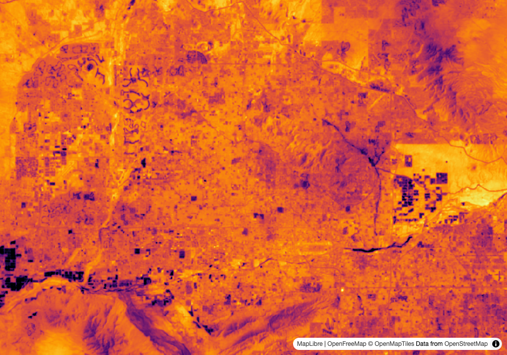
map: Landsat 9 surface temperature, 2026-08-17 ↗full read
Our read
On 2026-08-17 the hottest ground in central Phoenix was the airport and downtown strip, around 334 K and 333 K (about 61 C and 60 C); the cooler residential side to the northeast read about 329 K. Those are my arithmetic from the returned raw values using the returned scale (K = 149 + 0.00341802 x value), not tool output, and they come from only four boxes I drew by hand, so they are not a ranking of every neighborhood. South Mountain Park read about 330 K. The picture is the map: Landsat 9 surface temperature, drawn dark to bright from 313 K to 344 K (about 40 C to 71 C, my arithmetic, from the 48000 to 57000 rescale), with the whole central box averaging about 332 K. One caution on 'afternoon': the scene was taken at 18:03 UTC, which is 11:03 in Phoenix (my arithmetic, Arizona is UTC-7 all year), so this is late morning and the afternoon peak is hotter.show the data
geocode("Phoenix, Arizona")
source: nominatim name: Phoenix, Maricopa County, Arizona, United States
bbox: [-112.3240289, 33.2904827, -111.9255304, 33.9183794] [whole city, 0.4 x 0.63 deg]
[central box chosen by hand: [-112.35, 33.3, -111.85, 33.75]]
search_imagery("planetary-computer", ["landsat-c2-l2"], bbox=[-112.2, 33.3, -111.9, 33.6], datetime_range="2026-08-01T00:00:00Z/2026-08-31T23:59:59Z", max_cloud_cover=10)
count: 6
LC08_L2SP_037037_20260825_02_T1 2026-08-25T18:03 cloud 1.09 covers 100.0
LC08_L2SP_036037_20260818_02_T1 2026-08-18T17:57 cloud 0.07 covers 100.0
LC09_L2SP_037037_20260817_02_T1 2026-08-17T18:03 cloud 0.0 covers 100.0
LC09_L2SP_036037_20260810_02_T1 2026-08-10T17:57 cloud 0.01 covers 100.0
LC08_L2SP_037037_20260809_02_T1 2026-08-09T18:03 cloud 0.0 covers 100.0
LC09_L2SP_037037_20260801_02_T1 2026-08-01T18:03 cloud 1.7 covers 100.0
compute_statistics("planetary-computer", "landsat-c2-l2", "LC09_L2SP_037037_20260817_02_T1", assets=["lwir11"], bbox=central)
lwir11_b1: min 46440.0 max 57715.0 mean 53599.36989052332 median 53745.0 percentile_2 50883.0 percentile_98 55250.0 valid_percent 100.0
band_scaling: [16 unlabeled entries; the thermal one reads {"scale": 0.00341802, "offset": 149, "unit": "kelvin"}]
render_postcard("planetary-computer", "landsat-c2-l2", "LC09_L2SP_037037_20260817_02_T1", "Phoenix, Arizona", "2026-08-17", assets=["lwir11"], rescale="48000,57000", colormap_name="inferno", bbox=central)
{"path": "docs/img/ft13-heat-phoenix.html"}
[opened the card's embedded image: a natural-colour picture of the whole scene, no heat colours, no crop]
preview_item(same arguments)
{"preview_url": "https://planetarycomputer.microsoft.com/api/data/v1/item/preview.png?collection=landsat-c2-l2&item=LC09_L2SP_037037_20260817_02_T1&assets=red&assets=green&assets=blue&color_formula=gamma%20RGB%202.7,%20saturation%201.5,%20sigmoidal%20RGB%2015%200.55&format=png", "backend": "pc-data-api"}
tile_url_template("planetary-computer", "landsat-c2-l2", "LC09_L2SP_037037_20260817_02_T1", assets=["lwir11"], rescale="48000,57000", colormap_name="inferno")
https://planetarycomputer.microsoft.com/api/data/v1/mosaic/391002d7af89d0d6be31f3dcf053519b/tiles/WebMercatorQuad/{z}/{x}/{y}@1x.png?collection=landsat-c2-l2&assets=lwir11&rescale=48000%2C57000&colormap_name=inferno
[one z10 tile fetched: HTTP 200, heat-coloured]
render_map("Phoenix heat, 17 Aug 2026", bbox=central, layers=[raster], stack_facts={"geocoded": "nominatim"})
map_path: docs/img/ft13-heat-phoenix.html
compute_statistics(..., "lwir11", bbox=), mean of raw values:
downtown [-112.09, 33.43, -112.05, 33.47] mean 53928.57 min 51219 max 55744
sky harbor area [-112.03, 33.41, -111.98, 33.45] mean 54132.74 min 49648 max 55845
south mountain [-112.12, 33.32, -112.05, 33.37] mean 53003.61 min 48726 max 55874
arcadia east [-111.99, 33.49, -111.95, 33.52] mean 52669.13 min 50385 max 54533
Learning → The postcard tool cannot draw heat from Planetary Computer.
render_postcard returned a path as if it had worked, but the card holds the scene's pre-rendered natural-colour picture: on Planetary Computer preview_item ignores assets, rescale, colormap and bbox (its docstring admits only the bbox part). The card's own thermal ask was lost silently, so I opened the embedded image to catch it and switched to render_map, whose tile route does honour lwir11, rescale and colormap. Also, band_scaling lists 16 unlabeled entries; the Kelvin one is the entry with offset 149.render_postcard (PC natural-colour fallback found) · Landsat C2 L2 lwir11 via render_map · compute_statistics clipped to hand boxes · band_scaling · Stack panel
13
find lst data
public health researcher
Input
What datasets do you have for land surface temperature over California's Central Valley, and can you show one?
Our read
Five land-surface-temperature products fit, and I drew one: MODIS Terra daily daytime temperature at 1 km for 2026-10-16.
Learning → The recommended scene was the wrong tile, and the cloud number was the wrong number.
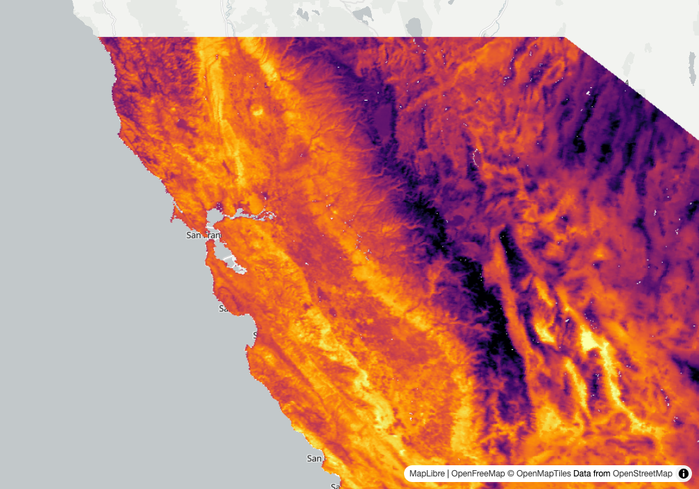
map: MODIS Terra land surface temperature, 2026-10-16 ↗full read
Our read
Five land-surface-temperature products fit, and I drew one: MODIS Terra daily daytime temperature at 1 km for 2026-10-16. The list is MODIS daily (modis-11A1-061, 1 km, from 2000-02-24), MODIS 8-day (modis-11A2-061), MODIS with 3-band emissivity (modis-21A2-061), Sentinel-3 SLSTR (sentinel-3-slstr-lst-l2-netcdf), and Landsat Collection 2 Level-2 (it has a thermal band, lwir11). ASTER and the NOAA climate normals also came up, but I did not look at them. Over a box on the Valley floor and foothills the 2026-10-16 mean read about 297.8 K (about 24.7 C), range 274.5 K to 310.0 K (my arithmetic: raw value x 0.02 K, the scale in band_scaling; the cold end is most likely the Sierra side of the box, my reading). The map shows the Valley bright and the Sierra dark, 280 K to 310 K.show the data
geocode("Central Valley, California")
source: nominatim name: Central Valley, San Joaquin County, California, 95201, United States
lat: 38.0 lon: -121.4
bbox: [-121.55, 37.85, -121.25, 38.15]
bbox_note: geocoder returned a point, not an extent -- widened to a 0.3 deg box around it. Pass your own bbox if the subject is bigger
candidates: 1. kind valley bbox [-121.40005, 37.99995, -121.39995, 38.00005]
[valley box chosen by hand: [-122.4, 35.0, -118.6, 40.4]]
search_datasets("land surface temperature", bbox=valley)
planetary-computer aster-l1t ASTER L1T
planetary-computer landsat-c2-l2 Landsat Collection 2 Level-2
planetary-computer modis-11A1-061 MODIS Land Surface Temperature/Emissivity Daily
planetary-computer modis-11A2-061 MODIS Land Surface Temperature/Emissivity 8-Day
planetary-computer modis-21A2-061 MODIS Land Surface Temperature/3-Band Emissivity 8-Day
planetary-computer noaa-climate-normals-gridded NOAA US Gridded Climate Normals (Cloud-Optimized GeoTIFF)
planetary-computer noaa-climate-normals-netcdf NOAA US Gridded Climate Normals (NetCDF)
planetary-computer sentinel-3-slstr-lst-l2-netcdf Sentinel-3 Land Surface Temperature
(8 rows)
describe_collection("planetary-computer", "modis-11A1-061")
title: MODIS Land Surface Temperature/Emissivity Daily
extent: global, 2000-02-24T00:00:00Z to open end
assets: LST_Day_1km (Daily daytime 1km grid Land-surface Temperature), LST_Night_1km, QC_Day, QC_Night, Clear_day_cov, Clear_night_cov, Day_view_time, Emis_31, Emis_32 [...]
search_imagery("planetary-computer", ["modis-11A1-061"], bbox=valley, datetime_range="2026-10-20T00:00:00Z/2026-10-25T23:59:59Z", limit=10)
recommended: {"id": "MOD11A1.A2026296.h07v05.061.2026297104028", "covers_aoi_pct": 92.6, "cloud_cover": 0, "reason": "clearest (0.0% cloud) and best-covering (92.6% of the area), not a tradeoff"}
MOD11A1.A2026296.h08v05... 2026-10-23 bbox [-130.540729, 30.0, -103.923048, 40.0] cloud 34 covers 92.6
MOD11A1.A2026296.h07v05... 2026-10-23 bbox [-143.594802, 30.0, -115.470054, 40.0] cloud 0 covers 92.6
tile_url_template(... "MOD11A1.A2026296.h07v05.061.2026297104028", assets=["LST_Day_1km"], rescale="14500,16000", colormap_name="inferno"), tile fetched at z7 over 37.0 N, 120.5 W
HTTP 204, 0 bytes
same call for the h08v05 item: HTTP 200
compute_statistics("planetary-computer", "modis-11A1-061", , assets=["LST_Day_1km"], bbox=[-121.5, 36.0, -119.0, 38.5])
2026-10-23: mean 14328.656 min 13221.0 max 14777.0 valid_percent 8.68
2026-10-16: mean 14890.5216 min 13726.0 max 15501.0 valid_percent 99.89 [item MOD11A1.A2026289.h08v05.061.2026290092230, tile cloud 13]
band_scaling includes {"scale": 0.02, "unit": "Kelvin"}
render_map("Valley land surface temp", bbox=valley, layers=[raster MODIS Terra LST_Day_1km 2026-10-16, rescale 14000,15500, inferno], stack_facts={"geocoded": "nominatim"})
map_path: docs/img/ft13-heat-valley.html
Learning → The recommended scene was the wrong tile, and the cloud number was the wrong number.
search_imagery recommended h07v05 (0% cloud, 92.6% covered), but its envelope box only overlaps the Valley: a tile fetched over the Valley came back empty (HTTP 204), while the Valley is on h08v05. And that tile's 34% cloud on 2026-10-23 meant only 8.68% of the Valley box held a valid value, so I took 2026-10-16 (99.89% valid). Check valid_percent from compute_statistics, not the item's tile-wide cloud figure. The geocoder also gave a point for the Valley (a 0.0001 degree box); I drew the Valley box by hand.search_datasets with bbox · describe_collection · search_imagery recommended vs real coverage · tile_url_template (PC MODIS) · render_map · compute_statistics valid_percent · geocode kind field (0.28.0) · Stack panel
14
brief with sources
parish emergency manager
Input
Give me this morning's brief for Lake Charles: anything active, weather, smoke.
Our read
Nothing is active near Lake Charles this morning, but the two tools disagree on "all clear" because they look at different areas.
Learning → The CALM is earned, but the page and the tool search different areas.
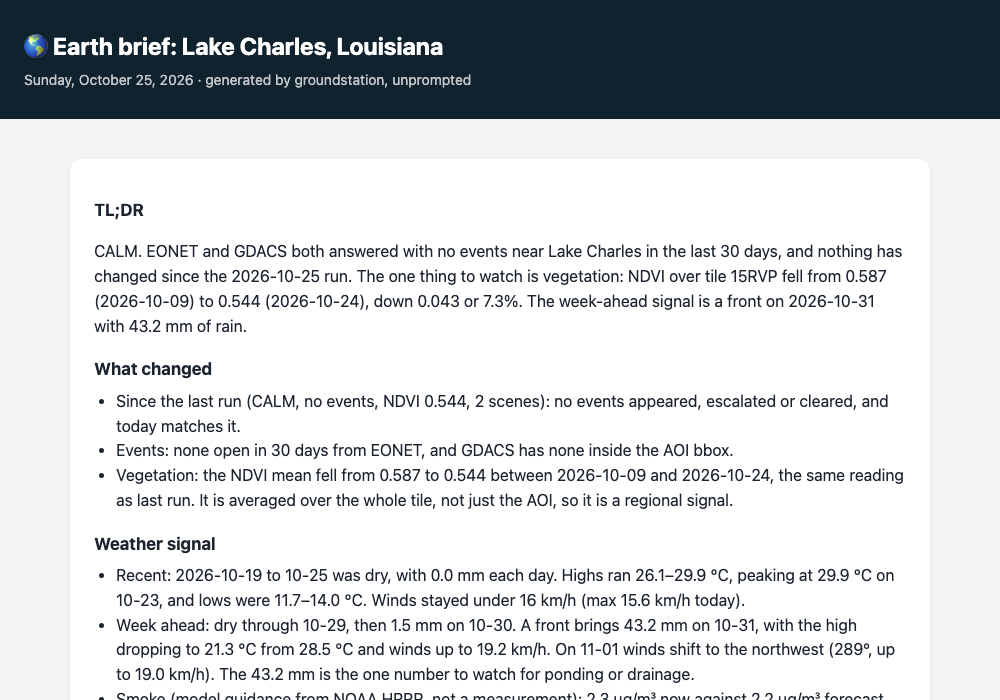
brief: Lake Charles, CALM, both feeds answered ↗full read
Our read
Nothing is active near Lake Charles this morning, but the two tools disagree on "all clear" because they look at different areas. Both event feeds (EONET and GDACS) answered, so no source was down. The brief page reads CALM: dry (no rain in the last 7 days), light east wind (11.1 km/h peak today in the tool, 15.6 km/h per the page's weather line), smoke 2.3 ug/m3 under the 5 ug/m3 clear line (HRRR model guidance, not a measurement), and 43.2 mm of rain forecast for 2026-10-31. conditions_brief reported all_clear: false because it counted one open event: a prescribed fire (Rx Polk 9275) in Polk County, Texas, dated 2026-10-16, about 1.5 degrees of longitude west, roughly 140 km (my arithmetic from its coordinates). A prescribed burn that far away is not an emergency for the parish.show the data
geocode("Lake Charles, Louisiana")
source: nominatim name: Lake Charles, Calcasieu Parish, Louisiana, United States
lat: 30.228435 lon: -93.2346449
bbox: [-93.2480773, 30.2173773, -93.221324, 30.2398187]
candidates: 1. kind lake bbox [-93.2480773, 30.2173773, -93.221324, 30.2398187]
2. kind city bbox [-93.316857, 30.124502, -93.128831, 30.27231]
[the lake was picked first, not the city]
conditions_brief(place="Lake Charles, Louisiana", days_back=7)
dryness: {"total_precipitation": 0.0, "days_since_last_rain": null, "days_back": 7}
wind.today: {"wind_speed_max": 11.1, "wind_direction_dominant": 69, "wind_direction_compass": "from the E"}
events.eonet: [{"title": "Prescribed Fire Rx Polk 9275, Polk, Texas", "category": "Wildfires", "date": "2026-10-16T08:31:00Z", "coordinates": [-94.72916667, 30.57111111]}]
sources: {"eonet": {"ok": true, "listed": 1, "error": null}, "gdacs": {"ok": true, "listed": 0, "error": null}}
all_clear: false
all_clear_note: "1 EONET events in the box"
latest_look: {"id": "S2C_15RVP_20261024_0_L2A", "date": "2026-10-24", "cloud": 0.004831, "covers_aoi_pct": 100.0}
signals: ["no rain >=1mm in the last 7 days", "peak wind today 11 km/h from the E", "1 active wildfire within ~150 km"]
uv run briefing/brief.py --place "Lake Charles, Louisiana" --days 7 --out (page data.json)
aoi_bbox: [-93.2480773, 30.2173773, -93.221324, 30.2398187]
events.sources: {"eonet": {"ok": true, "listed": 0, "error": null}, "gdacs": {"ok": true, "listed": 0, "error": null}}
events.all_clear: true all_clear_note: "EONET and GDACS both answered with no events"
brief TL;DR: **CALM.** EONET and GDACS both answered with no events near Lake Charles in the last 30 days, and nothing has changed since the 2026-10-25 run. The one thing to watch is vegetation: NDVI over tile 15RVP fell from 0.587 (2026-10-09) to 0.544 (2026-10-24), down 0.043 or 7.3%. The week-ahead signal is a front on 2026-10-31 with 43.2 mm of rain.
smoke: Smoke (model guidance from NOAA HRRR, not a measurement): 2.3 ug/m3 now against 2.2 ug/m3 forecast for 2026-10-27 05:00Z. Both are in the clear range, under 5 ug/m3.
Learning → The CALM is earned, but the page and the tool search different areas. The page never defaulted to CALM: both feeds answered (
ok: true) and found nothing, so CALM follows its rule. The split is the search radius: the page pads the geocoded box by 0.4 degrees (briefing/brief.py), conditions_brief pads it by 1.5 (tools.py), and the Texas burn sits about 1.48 degrees west of the box, inside one and outside the other. It is made worse by 0.28.0: the word "lake" in "Lake Charles" picked the lake candidate, a 0.03 degree box, over the city. Nothing timed out, so I did not get to show WATCH on a dead source; the Walla Walla card's page shows WATCH on an open fire.conditions_brief sources + all_clear + all_clear_note (0.25.0) · brief page CALM with every source answering · geocode kind: lake vs city (0.28.0) · smoke from the brief page · Stack panel on the brief map
15
clear archive
disaster planner
Input
Build me an offline archive of the clear Sentinel-2 scenes over San Juan from the last 60 days, nothing over 20 percent cloud, so I can search it with the network cut. San Juan, Puerto Rico.
Our read
The archive holds 7 Sentinel-2 scenes over San Juan, all at 20% cloud or less, from 2026-09-20 to 2026-10-23.
Learning → The datetime_range in the reply is the span of what landed, not the window you asked for.
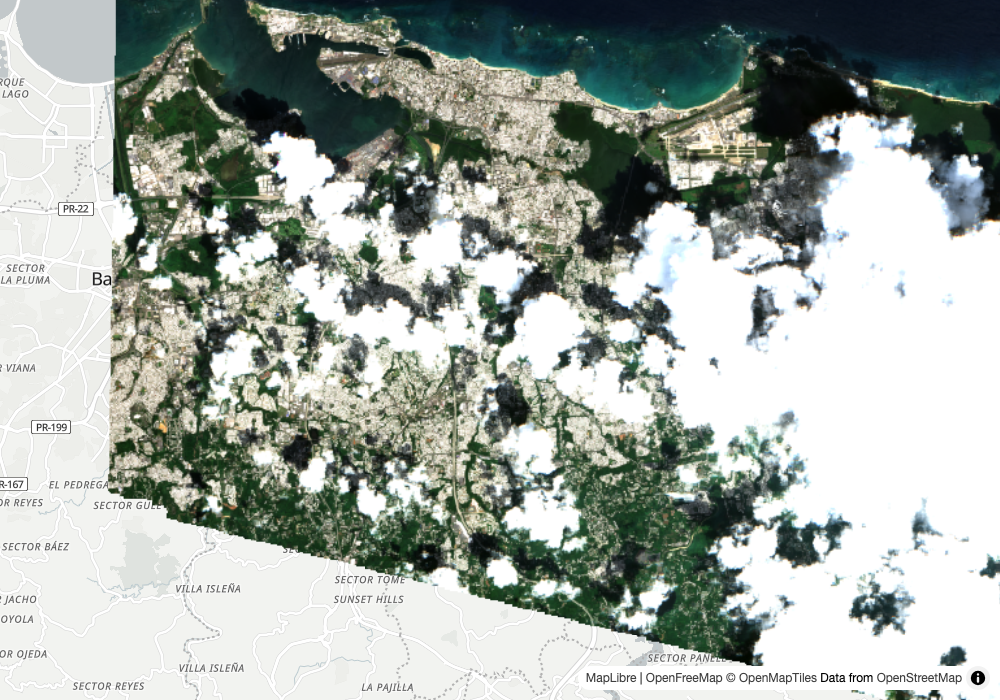
map: San Juan, Sentinel-2, 2026-10-18 ↗full read
Our read
The archive holds 7 Sentinel-2 scenes over San Juan, all at 20% cloud or less, from 2026-09-20 to 2026-10-23. It was written on 2026-10-26 (UTC date), to sanjuan-s2.parquet, and searches back as 7 by file path (I did not cut the network to test that). Of the 33 scenes the catalog listed over San Juan in the last 60 days, 26 were over 20% cloud and are not in it (my arithmetic: 33 minus 7). The best scene to open first is 2026-10-18 (S2C_19QHA_20261018_0_L2A, 14.1% cloud, covers all of San Juan); a clearer one the same day (2.4%) covers only 41.7% of the area. The map shows that 2026-10-18 scene.show the data
geocode("San Juan, Puerto Rico")
source: nominatim name: San Juan, Puerto Rico, United States
bbox: [-66.1250904, 18.2965306, -65.9914197, 18.4719861] [municipio; used as is]
candidates: 1. kind county
write_archive("earth-search", ["sentinel-2-l2a"], bbox=sanjuan, datetime_range="2026-08-27T00:00:00Z/2026-10-26T23:59:59Z", out_path="/tmp/ft13r3/arch/sanjuan-s2.parquet", max_cloud_cover=20)
{"path": "/tmp/ft13r3/arch/sanjuan-s2.parquet", "count": 7, "datetime_range": ["2026-09-20T15:07:58.686000Z", "2026-10-23T15:07:45.366000Z"], "written": "2026-10-26"}
search_imagery("/tmp/ft13r3/arch/sanjuan-s2.parquet", ["sentinel-2-l2a"], bbox=sanjuan, limit=50)
count: 7
recommended: {"id": "S2C_19QHA_20261018_0_L2A", "covers_aoi_pct": 100.0, "cloud_cover": 14.070408, "reason": "14.1% cloud but covers 100.0% of the area; the clearest scene (2.4% cloud) covers 41.7%"}
S2B_19QHA_20261023_0_L2A 2026-10-23 cloud 18.642227 covers 100.0
S2C_19QGA_20261018_0_L2A 2026-10-18 cloud 2.386217 covers 41.7
S2C_19QHA_20261018_0_L2A 2026-10-18 cloud 14.070408 covers 100.0
S2A_19QHA_20261010_1_L2A 2026-10-10 cloud 13.807759 covers 100.0
S2B_19QHA_20260923_0_L2A 2026-09-23 cloud 12.161435 covers 100.0
S2A_19QGA_20260920_0_L2A 2026-09-20 cloud 19.268575 covers 49.8
S2A_19QHA_20260920_1_L2A 2026-09-20 cloud 15.632421 covers 100.0
search_imagery("earth-search", ["sentinel-2-l2a"], bbox=sanjuan, datetime_range="2026-08-27T00:00:00Z/2026-10-26T23:59:59Z", limit=100) [live, no cloud filter]
count: 33 cloud percent per scene, rounded: 2, 12, 14, 14, 16, 19, 19, 25, 27, 32, 35, 36, 39, 41, 47, 54, 54, 55, 56, 60, 61, 63, 66, 72, 77, 77, 77, 77, 78, 78, 83, 84, 93
render_map("San Juan, 18 Oct 2026", bbox=sanjuan, layers=[raster S2C_19QHA_20261018_0_L2A, assets=visual], stack_facts={"geocoded": "nominatim"})
map_path: docs/img/ft13-heat-sanjuan.html
Learning → The
datetime_range in the reply is the span of what landed, not the window you asked for. I asked for 2026-08-27 on, and the reply says the archive starts 2026-09-20: nothing in the first three and a half weeks passed the 20% filter, which only shows if you compare it with the request. In the tropics the filter bites hard (7 of 33 scenes kept), so a planner should expect a thin archive and widen the window rather than the cloud limit. written is the UTC date, 2026-10-26, a day ahead of the Pacific evening of 2026-10-25 when it ran.write_archive max_cloud_cover (0.27.0) · written UTC date · search_imagery on a local parquet path · render_map of the best-covering item · Stack panel
Round 4 — places, passes, popups and stacks
16
which portland
harbor pilot
Input
Show me the harbor approaches at Portland from the latest Landsat pass.
Our read
The latest clear Landsat pass over Casco Bay is Landsat 9 on 2026-10-21 (2.63% cloud), but the postcard shows the whole scene, not the harbor.
Learning → Earth Search lists Landsat but cannot draw it, and Planetary Computer draws it but will not crop it.
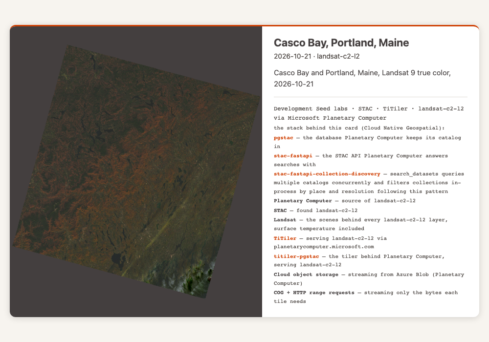
postcard: Casco Bay, Landsat 9, 2026-10-21 ↗full read
Our read
The latest clear Landsat pass over Casco Bay is Landsat 9 on 2026-10-21 (2.63% cloud), but the postcard shows the whole scene, not the harbor. "Portland" alone would have drawn the wrong coast: the tools refused it as ambiguous until the pilot said Maine. I asked the card for a hand-picked 0.5 x 0.3 degree box over the bay, and Planetary Computer ignored it: the card is the full Landsat scene, mostly inland country, with Casco Bay a small patch in the bottom-right corner. For the approaches a pilot would need a map zoomed to the bay. This is a 30 m satellite picture and not for navigation; the date is the scene date, not a live view.show the data
geocode("Portland")
source: gazet name: Portland (United States, urban_centre) ambiguous: true
geocode_note: 5 places match 'Portland' equally well; using Portland (United States, urban_centre) at 45.5N 122.7W, not Portland (US, locality) at 45.5N 122.7W, Portland (US, locality) at 43.6N 70.2W, Portland (United States, urban_centre) at 43.7N 70.3W. Pass the fuller name if another was meant. ambiguous: pass the fuller name or a bbox
candidates (kind): urban_centre at 45.5N 122.7W | locality at 45.5N 122.7W | locality at 43.6N 70.2W | urban_centre at 43.7N 70.3W
search_imagery("earth-search", ["landsat-c2-l2"], place="Portland", datetime_range="2026-09-01T00:00:00Z/2026-10-26T00:00:00Z")
error: 'Portland' matches more than one place: urban_centre (at 45.5N 122.7W) or locality (at 45.5N 122.7W) or locality (at 43.6N 70.2W) or urban_centre (at 43.7N 70.3W)? Pass a fuller name or a bbox
geocode("Portland, Maine")
source: nominatim name: Portland, Cumberland County, Maine, United States kind: city
bbox: [-70.3473997, 43.5443477, -69.9758509, 43.7276965] [city limits plus water; Casco Bay box chosen by hand: [-70.40, 43.55, -69.90, 43.85]]
search_imagery("planetary-computer", ["landsat-c2-l2"], bbox=casco, datetime_range="2026-08-15T00:00:00Z/2026-10-26T00:00:00Z", max_cloud_cover=15)
recommended: LC09_L2SP_012029_20261021_02_T1 cloud_cover 2.63 covers_aoi_pct 100.0
reason: 2.6% cloud, covers 100.0% of the area, and newest of 4 near-equal scenes; the clearest (0.0% cloud) is from 2026-09-12
render_postcard("earth-search", "landsat-c2-l2", "LC09_L2SP_012029_20261021_02_T1", ..., assets=["red","green","blue"], rescale="7000,16000", bbox=casco)
httpx.HTTPStatusError: Server error '500 Internal Server Error' for url 'https://titiler.xyz/stac/bbox/-70.4,43.564444,-69.9,43.835556.png?url=https%3A%2F%2Fearth-search.aws.element84.com%2Fv1%2Fcollections%2Flandsat-c2-l2%2Fitems%2FLC09_L2SP_012029_20261021_02_T1&assets=red&assets=green&assets=blue&rescale=7000%2C16000&max_size=1024&dst_crs=epsg%3A3857'
render_postcard("planetary-computer", "landsat-c2-l2", "LC09_L2SP_012029_20261021_02_T1", "Casco Bay, Portland, Maine", "2026-10-21", assets=["red","green","blue"], rescale="7000,16000", bbox=casco, caption="Casco Bay and Portland, Maine, Landsat 9 true color, 2026-10-21")
path: docs/img/ft13-place-casco.html
Learning → Earth Search lists Landsat but cannot draw it, and Planetary Computer draws it but will not crop it. The scene returned a 500 from the tiler through earth-search (list_catalogs says Landsat there is requester-pays and won't tile; search_imagery does not). Through planetary-computer the postcard worked but ignored the bbox, because Planetary Computer previews are pre-rendered whole-scene PNGs, so the card came back uncropped with no warning; I only saw it by decoding the card's image. Also, the ambiguity refusal lists four candidates by kind and coordinates with no state named, so the pilot has to read coordinates to find Maine.
geocode kinds and ambiguity refusal (0.28.0) · Landsat postcard · render_postcard bbox ignored on Planetary Computer
17
field crew popups
wildfire field crew lead
Input
Put our water sources on a map of the fire area with notes so the crews can tap each one.
Our read
The map shows the Cooley fire area in Mendocino County with five water-source dots the crews can tap, each with its note.
Learning → The hostile popup text survived.
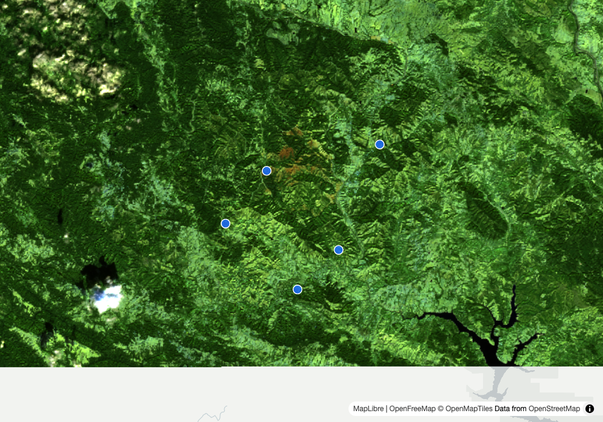
map: Cooley fire, SWIR, water sources ↗full read
Our read
The map shows the Cooley fire area in Mendocino County with five water-source dots the crews can tap, each with its note. The fire is the EONET wildfire COOLEY, Mendocino, California, reported 2026-10-16; EONET gives no acreage, so I cannot say it is among the largest. The backdrop is a Sentinel-2 shortwave-infrared false-colour scene from 2026-10-23 (5.66% cloud). The five water sources are made-up points I placed by hand to test the popups; they are not real sources. In a real browser the popup for Water 1 reads exactly Camp 2 <north ridge> & "spring" as typed, quotes, ampersand and angle brackets included (checked by clicking it).show the data
active_events(bbox=[-125, 32, -100, 49], days=30)
{"title": "Wildfire COOLEY, Mendocino, California", "category": "Wildfires", "date": "2026-10-16T20:14:00Z", "coordinates": [-123.188056, 38.819722], "link": "https://eonet.gsfc.nasa.gov/api/v3/events/EONET_25450"}
[...] (also Wildfire Bras, Sanders, Montana 2026-10-17; no acreage field on any event)
search_imagery("earth-search", ["sentinel-2-l2a"], bbox=fire, datetime_range="2026-10-01T00:00:00Z/2026-10-26T00:00:00Z", max_cloud_cover=30)
S2C_10SDJ_20261023_0_L2A 2026-10-23 cloud 5.66 covers_aoi_pct 90.3 [fire box by hand: 0.2 x 0.16 deg around the event point: [-123.288056, 38.739722, -123.088056, 38.899722]]
render_map("Cooley fire water sources", bbox=fire, layers=[item S2C_10SDJ_20261023_0_L2A assets swir22,swir16,red rescale 0,4000; geojson "Water sources", 5 points], stack_facts={"events": True})
map_path: docs/img/ft13-place-cooley-water.html
coverage_note: layers cover 90% of the requested view, so the rest renders blank. Pass the whole full_coverage_set from search_imagery, or tighten bbox to what you have
popup text as written in the file (JSON-escaped in the page source): Camp 2 \u003cnorth ridge> & \"spring\"
Headless Chromium (playwright, 390 px viewport), clicked two points on the map, read .maplibregl-popup-content:
'Water 1\nCamp 2 & "spring"\n\u00d7'
'Water 4\nHydrant "H-7" & \n\u00d7'
Learning → The hostile popup text survived. Two popups opened in headless Chromium showed the quotes, the ampersand and the angle brackets literally, with no swallowed tag and no broken markup, which is what the 0.26.1 escaping is for. The popup is only title plus description: the point layer reads
title (or name) and description and drops every other property, so a crew lead's extra fields (capacity, phone) would need to be written into the description string. The scene covers 90% of the box; the tool said so in coverage_note and one edge renders blank.popup escaping (0.26.1) · render_map GeoJSON layer · Sentinel-2 SWIR false colour · active_events
18
next clear pass
incident commander
Input
When does the next Sentinel-2 or Landsat pass come over, and will it be in daylight?
Our read
The next pass is Sentinel-2B on 2026-10-28 at 19:13 UTC; no Landsat pass came up in the next 3 days.
Learning → There is no daylight flag on a pass, and no geometry.
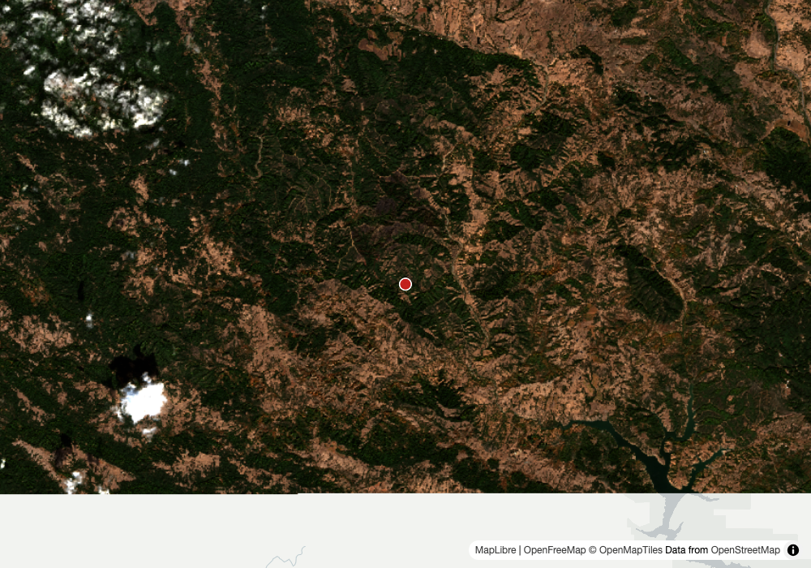
map: Cooley fire, next pass 2026-10-28 ↗full read
Our read
The next pass is Sentinel-2B on 2026-10-28 at 19:13 UTC; no Landsat pass came up in the next 3 days. The tool puts the track 77.3 km from the fire point, and says plainly this is swath geometry, a possible capture and not a promised one, with imagery reaching the catalogs hours to a day later. Daylight: yes, by my arithmetic, not tool output. 19:13 UTC is 12:13 PDT, and at the fire (38.8 N, 123.2 W) on 2026-10-28 I get sunrise about 14:34 UTC (07:34 PDT) and sunset about 01:19 UTC on the 29th (18:19 PDT), with the sun about 37 degrees up at pass time (all my arithmetic, not tool output). The tool itself returns no daylight flag. The map shows the latest scene (2026-10-23) with the pass time in the subtitle, because next_pass returned no footprint to draw. The fire point is the EONET event location.show the data
next_pass(38.819722, -123.188056, constellations=["sentinel-2", "landsat"], days=3)
point: {"lat": 38.819722, "lon": -123.188056} window_days: 3
passes: [{"constellation": "sentinel-2", "satellite": "SENTINEL-2B", "time_utc": "2026-10-28 19:13", "track_distance_km": 77.3, "kind": "optical", "access": "open"}]
constellations_source: developmentseed/eo-predictor skipped: []
note: swath geometry from live TLEs, not the acquisition plan — a pass is a possible capture, and imagery reaches public catalogs hours to a day later. Commercial sensors only image if tasked. Richer view: https://developmentseed.org/eo-predictor
[no geometry, no daylight field, no Landsat entry]
render_map("Cooley fire: next pass", bbox=fire, layers=[S2C_10SDJ_20261023_0_L2A visual; geojson fire point], subtitle="Next Sentinel-2B pass: 2026-10-28 19:13 UTC. Latest scene 10-23", stack_facts={"events": True, "passes": True})
map_path: docs/img/ft13-place-cooley-pass.html
Learning → There is no daylight flag on a pass, and no geometry. The docstring says optical passes are "filtered to local daytime" and the code drops any optical pass outside 06:00 to 18:00 local solar time, but a returned pass carries only constellation, satellite, time_utc, track distance, kind and access; a commander cannot see that the filter ran or what the sun angle is, so I worked sunrise and sunset out myself. Landsat's absence is ambiguous: no pass in 3 days could mean none in reach or one dropped by the filter, and the reply cannot tell the two apart.
next_pass (Sentinel-2, Landsat) · daylight gap stated · render_map with passes fact in Stack panel
19
glacier timelapse
climate teacher
Input
Show my class Columbia Glacier in Alaska pulling back, one frame per year for as many years as you can.
Our read
I got 9 frames, one per year for 2015, 2016, 2018, 2019, 2020, 2021, 2023, 2024 and 2026, all Landsat true colour, so the class can step from 2015 to 2026.
Learning → An item's bbox says it covers the glacier when the real swath edge cuts across it.
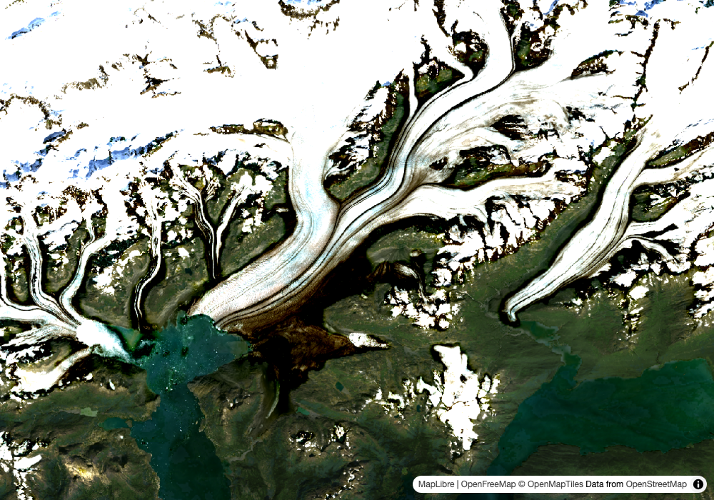
timelapse: Columbia Glacier, 9 Landsat years ↗full read
Our read
I got 9 frames, one per year for 2015, 2016, 2018, 2019, 2020, 2021, 2023, 2024 and 2026, all Landsat true colour, so the class can step from 2015 to 2026. Landsat gave more usable years than Sentinel-2, which has 11 (2016 to 2026) but nothing under 25% cloud for 2015. Three years are missing (2017, 2022, 2025) because no scene from the same satellite track was clear enough: the best were 54%, 48% and 39% cloud. I looked at one rendered frame in a browser (the first, which shows the glacier front at the lower left); I did not step through the other eight, so I am not claiming how far the front moved in each year.show the data
geocode("Columbia Glacier, Alaska")
source: nominatim name: Columbia Glacier, Unorganized Borough, Alaska, United States kind: glacier
bbox: [-147.2317881, 61.1023236, -146.4704299, 61.4578172] [whole glacier; frame box chosen by hand around the terminus: [-147.25, 61.05, -146.45, 61.35]]
search_imagery("planetary-computer", ["sentinel-2-l2a"], ..., one search per year, 07-25 to 09-15, max_cloud_cover=25)
2015: no items; 2016 to 2026: at least one scene each [Sentinel-2 gives 11 years]
search_imagery("planetary-computer", ["landsat-c2-l2"], bbox=[-147.1, 61.15, -146.7, 61.3], one search per year, 07-15 to 10-05)
path/row 067017, Landsat 8/9 (not Landsat 7), 35% cloud or less:
2015 LC08_L2SP_067017_20150813 cloud 10.6 | 2016 LC08_L2SP_067017_20160831 cloud 0.87 | 2017 none (best 54%) | 2018 LC08_L2SP_067017_20180720 cloud 25.71
2019 LC08_L2SP_067017_20190808 cloud 4.99 | 2020 LC08_L2SP_067017_20200911 cloud 2.2 | 2021 LC08_L2SP_067017_20210829 cloud 6.72 | 2022 none (best 48%)
2023 LC08_L2SP_067017_20230803 cloud 33.25 | 2024 LC09_L2SP_067017_20240930 cloud 3.69 | 2025 none (best 39%) | 2026 LC08_L2SP_067017_20260827 cloud 5.83
render_timelapse("t", bbox=glacier, frames=[12 raster frames])
{'error': '12 frames is over the cap of 8: every frame is a tile layer, so pick fewer, evenly spaced windows (hard ceiling 12)'}
render_timelapse("t", bbox=glacier, frames=[13 raster frames], max_frames=20)
{'error': '13 frames is over the cap of 12: every frame is a tile layer, so pick fewer, evenly spaced windows (hard ceiling 12)'}
render_timelapse("Columbia Glacier, 9 years", bbox=glacier, frames=[9 Landsat item frames], max_frames=12, subtitle="Landsat true color, path 067 row 017, one scene a year")
{"map_path": "docs/img/ft13-place-columbia-tl.html", "frames": 9}
Learning → An item's bbox says it covers the glacier when the real swath edge cuts across it. My first 12-frame try took the clearest scene per year across three different Landsat tracks; search_imagery reported full coverage for all of them (first run, not in the block above), yet the first frame (2015, track 068) had a diagonal blank edge through the terminus. Restricting to one path/row (067017) fixed it and cost three years. The cap is two numbers: 12 frames without max_frames is refused at 8, and the hard ceiling of 12 stops 13 even with max_frames=20; here clouds, not the cap, limited the count. Landsat 7 scenes were excluded by hand for stripes, which the tools do not warn about.
render_timelapse cap (8 default, 12 ceiling) · tiles loaded per frame · Landsat and Sentinel-2 year-by-year search · geocode kind glacier
20
claims on the stack
insurance catastrophe adjuster
Input
Rolling Fork, Mississippi was hit by the March 24, 2023 tornado. Show me before and after, and tell me what data this came from.
Our read
The swipe shows Rolling Fork on 2023-02-19 against 2023-03-26, two days after the tornado; an early-March look does not exist in the archive.
Learning → There is nowhere to put the adjuster's own notes beside the map.
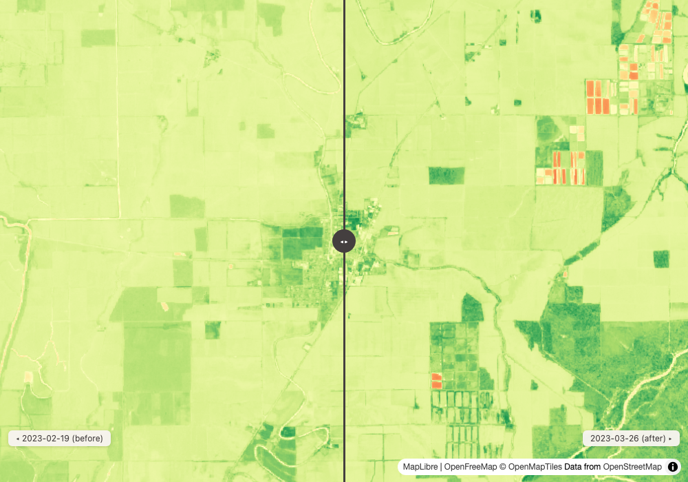
swipe: Rolling Fork NDVI, 2023-02-19 vs 03-26 ↗full read
Our read
The swipe shows Rolling Fork on 2023-02-19 against 2023-03-26, two days after the tornado; an early-March look does not exist in the archive. The March 1 to 15 search came back with 0 usable scenes before and 1 after; in the wider search the first scene with a clear sky after the storm is 2023-03-26 (0.77% cloud), and the earliest usable before is 2023-02-19 (45.6% cloud). The vegetation index (NDVI) over the 0.15 x 0.10 degree box went from 0.198 before to 0.2274 after, a rise of 0.0294 or 14.8%. That rise does not measure damage: it is a box-wide mean over mostly farmland (my reading of the area), spring was greening up, and the tool warns the before scene is 46% cloudy, which pushes the index toward zero. For the claim file, the data are the Sentinel-2 L2A scenes S2A_15SXS_20230219_0_L2A and S2B_15SXS_20230326_0_L2A, searched through Earth Search and drawn by the TiTiler tiler. The tornado date is yours, not from the tools.show the data
geocode("Rolling Fork, Mississippi")
source: nominatim name: Rolling Fork, Sharkey County, Mississippi, 39159, United States kind: village
bbox: [-90.8901362, 32.8962787, -90.8636289, 32.9190521] [town only; box chosen by hand to take in the town and the ground around it: [-90.95, 32.86, -90.8, 32.96]]
compare_dates(bbox=box, window_before="2023-03-01T00:00:00Z/2023-03-15T23:59:59Z", window_after="2023-04-01T00:00:00Z/2023-04-20T23:59:59Z", ...)
{"error": "Not enough scenes: 1 after, 0 before. Widen windows or cloud limit."}
compare_dates(bbox=box, window_before="2023-02-15T00:00:00Z/2023-03-23T23:59:59Z", window_after="2023-03-25T00:00:00Z/2023-04-01T23:59:59Z", max_cloud_cover=50, label="Rolling Fork NDVI", stack_facts={"geocoded": "nominatim"})
tile: 15SXS
after: S2B_15SXS_20230326_0_L2A 2023-03-26 cloud 0.767861 mean 0.2274
before: S2A_15SXS_20230219_0_L2A 2023-02-19 cloud 45.558468 mean 0.198
delta: 0.0294 delta_pct: 14.8 expression: (nir-red)/(nir+red)
clipped_to: [-90.95, 32.86, -90.8, 32.96]
caveat: ["cloud may be driving this delta (before scene 46%, threshold 20%). Cloud pushes a normalized index toward zero."]
map_path: (swipe map, copied to docs/img/ft13-place-rolling-fork.html)
grep of the written HTML for the Stack panel text: "Nominatim" present, "swipe compares" present
Learning → There is nowhere to put the adjuster's own notes beside the map. I first meant to pass claim facts (event, track, scene ids) in stack_facts; they are honest yes/no provenance flags for the Stack panel (geocoded, events, weather, passes, terrain, snapshot), and anything else is ignored. I passed only {"geocoded": "nominatim"}, which is true, and the panel credits Nominatim and the swipe. A box mean cannot isolate a tornado track: the clipped mean covers the whole box, so the number is a landscape average; the swipe is the evidence, the figure is not. The first window failed with "Not enough scenes: 1 after, 0 before" and I had to widen it and raise max_cloud_cover to 50.
compare_dates stack_facts passthrough (0.27.0) · clipped means · swipe · NDVI
Reproduce
git clone https://github.com/dannybauman/groundstation && cd groundstation
bash scripts/doctor.sh # walks the setup chain, prints the fix
uv run evals/unit_checks.py # 144 offline checks
uv run scripts/field_test.py docs/field-test-2026-10-26-no13.cases.json # renders this page and its stills